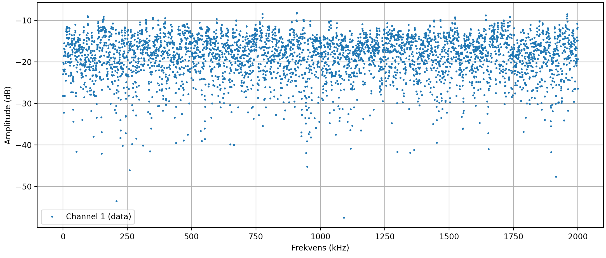
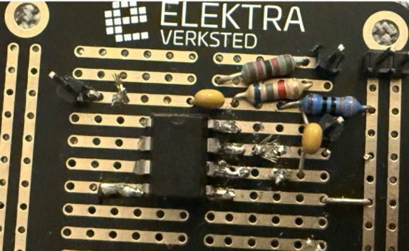
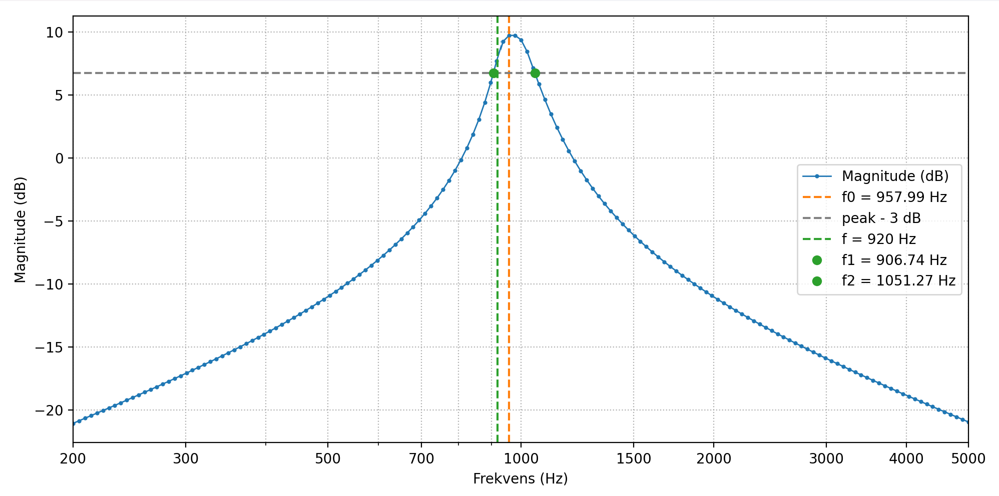
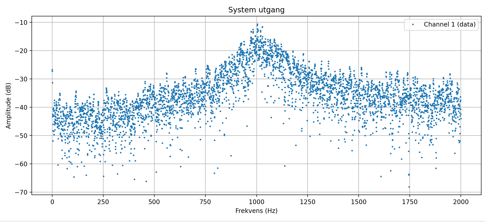

Fra støy til tone
Generer hvit støy digitalt på en FPGA, så båndpassér den så skarpt i det analoge domenet at utgangen høres ut som en tone i stedet for hvesing. Digital side: et Linear Feedback Shift Register på en Lattice ICE40HX1K. Analog side: et Delyiannis-Friend aktivt båndpassfilter på et loddet veroboard.
Støygeneratoren
Et Linear Feedback Shift Register (LFSR) er et skiftregister hvis inngang er en
XOR av noen utvalgte avgreninger. Hvis avgreningene velges av et primitivt polynom,
gir registeret en pseudotilfeldig sekvens med maksimal lengde
2L − 1 før den repeterer. Dette er en såkalt m-sekvens,
hvis autokorrelasjonsegenskaper gjør at den ser ut som hvit støy på relevant
tidsskala.
Bygd i IceStudio med en knapp på utviklingskortet som mater reset-linjen, så et knappetrykk sparker registeret ut av enhver alt-null-låst tilstand. FPGA-utgangen er en 3,3 V pulsstrøm, i praksis en 1-bits DAC, ført gjennom et passivt RC-lavpass for å ta toppen av de verste svitsjekantene.


Delyiannis-Friend-filteret
En aktiv båndpasstopologi med én op-amp som gir høy Q med få
komponenter. Designsenter f₀ = 920 Hz, Q = 12.
Formler for komponentverdier:
R₃ = 1 / (πBC)
R₁ = R₃ / (2H₀)
R₂ = R₃ / (4Q² − 2H₀)Med C = 22 nF kom de ideelle verdiene ut til R₃ ≈ 189 kΩ, R₁ ≈ 18,9 kΩ, R₂ ≈ 333 Ω. Realisert som seriekoblinger av standardmotstander (120 k + 68 k, 12 k + 6,8 k).


Målt mot designet
- Sentralfrekvens: 958 Hz målt (920 Hz designet). Omtrent 4 % høyt.
- Q-faktor: 6,6 målt (12 designet). Betydelig fall.
Q-fallet er den viktigste feilmoden. Tre plausible skyldige: kondensatortoleranser ved denne frekvensen er 5 % eller mer og dominerer båndformen. Op-ampen har endelig forsterknings-båndbredde ved høyere Q-faktorer og runder i praksis av toppen. Brødbrett-/veroboard-layouten introduserer parasittisk kapasitans og motstand i parallell med designet.
Til tross for lavere Q viser utgangs-FFT-en en tydelig spektral topp rundt f₀, og lyttetesten bekreftet en gjenkjennelig tonal karakter. Oppdraget var fullført, selv om båndet ble bredere enn designet.

